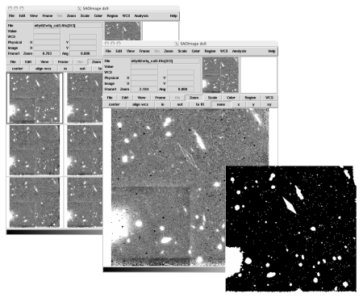

The PAPI pipeline includes N processing steps from basic calibration to generating final co-added registered mosaics (See table below). Among these steps are steps for successfully handling three of the most common PANIC anomalies: electronic ghosting, the pedestal effect and cosmic-ray persistence. Electronic ghosts occur when a bright object is observed in one of the four quadrants on a PANIC detector. This results in an echo of the bright object in the other three quadrants. The module undopuft attempts to remove these artifacts. The pedestal effect is the result of variable biases in each of the four PANIC quadrants - leaving a significant pedestal signature in the processed data.
| Module | Description |
|---|---|
| papi | Ingest uncalibrated data and builds a SQLite database containing fits header data |
| calDark | Removes electronic ghosts (a.k.a. the “Mr. Staypuft” effect) |
| calDarkModel | Basic calibration, sky subtraction/pedestal effect removal, cosmic-ray rejection |
| calBPM | Removes cosmic-ray persistence signal if target was observed shortly after the SAA |
| calDomeFlat | Removes residual instrument signatures by subtracting a “super-median” reference image |
| calTwFlat | Uses bicubic spline to flatten the background |
| calSuperFlat | Corrects for count-rate non-linearity |
| calGainMap | Apply user-defined masks (optional) |
| calNonLinearity | Uses object matching algorithms to improve image alignment and registration |
| checkQuality | Creates accurate RMS maps for use with MultiDrizzle |
| eval_focus_serie | Creates final CR-cleaned, distortion-free drizzled image mosaics using multidrizzle |
| astrowarp | Create final aligned and coadded frame using SEx,SCAMP and SWARP |
The papi module in the main PAPI routine that start the data reduction. It starts by creating a subdirectory in the PAPI_DIR using the run name give on the command line. Within the run directory the following subdirectories are created:
| Directory | Description |
|---|---|
| CALIB | A copy of all the uncalibrated input data and the output processed data products for modules undupuft through nonlincor |
| ALIGN | Output processed data products for modules weightmap through mdrizzle |
| FINAL | The final data products (final image mosiacs, weightmaps and context images) |
NICRED creates a SQLite database to store the uncalibrated input data fits headers and pipeline metadata:
| Table | Description |
|---|---|
| headers | Select FITS header keywords for all input images |
| run_log | Runtime log messages |
| run_pars | Value of each runtime option |
| run_status | Runtime status information for each module |
| raw | A VIEW of the header table listing only the raw FITS image headers |
The undopuft module attempts to remove the electronic ghosts that can appear when observing a bright source. For details see Electronic Ghosts: Mr. Staypuft, Ringing, and Streaking.
The calped module performs basic instrumental calibration (dark current subtraction, flat fielding, conversion to count rates, and cosmic ray identification and rejection) and attempts to remove the NICMOS pedestal effect. These task are performed by the STSCI IRAF package tasks calnica and pedsky.
The NICMOS pedestal effect is the result of variable biases in each of the four NICMOS detector quadrants these varying bias levels can leave a significant pedestal signature in the processed data. For details see the NICMOS anomaly page Residual Bias (Pedestal)
NICRED runs all of the calibration steps provided by calnica in the default sequence with the exception of one additional step. Before the calnica cosmic ray identification and removal step CRIDCALC is run NICRED runs an additional step to improve the cosmic ray rejection. For NICMOS MultiAccum mode observations, CRIDCALC assumes that accumulating background counts over the entire observation is a linear function. This assumption may not be the true for all observations. Depending on circumstances of the observation the background count rate may vary over the duration of the observation. In order to determine if the background count rate is sufficiently non-linear, NICRED computes the median of the first and last three readouts of the MultiAccum observation. If the NIRCED finds the count rate has varied it applies the additional step of running pedsky on each of the individual readouts in the MultiAccum observation. This additional step assures the background count rate is linear before running the CRIDCALC step.
The saaclean module removes cosmic ray persistence due to observations following an HST transit of the South Atlantic Anomaly (SAA). See Removing Post-SAA Persistence in NICMOS Data. NICRED uses the PyRAF task saaclean to perform this processing.
The medsub module attempts to remove any residual instrument signature left over after basic calibration by subtracting a “super-median” reference image. These super-median images are created by median stacking a large number of images that have been processed by the NICRED modules undopuft, calped and saaclean. Many super-median reference images (based on various camera, sample-sequence, observation window or HST proposal ID, and filter combinations) have been pre-generated and are provided in nicred_reffiles.tgz.
medsub uses the following criteria for determining which super-median image to use:
The flatten module attempts to remove any discontinuities between the four quadrants of a NICMOS camera 2 or 3 image. Discontinuities between quadrants can occur when an exposure contains a large bright object in one of the quadrants.
The nonlincor module corrects NICMOS images for their count-rate dependent non-linearity. It used the header keywords CAMERA and FILTER to determine the non-linearity parameter. It corrects the first image, and in the case of a multi-extension image, the second image as well, with the appropriate power law. For details see Correcting the NICMOS count-rate dependent non-linearity
NICRED has the ability to mask any residual artifacts that may occur in one’s data (e.g., as may occur when satellites pass through the HST focal plane). Masks are easily generated using SAO’s DS9 image display tool using the following procedure:

- Display all _cal4.fits images in DS9.
- Marked artifacts on each image with the DS9 polygon region tool.
- A script is run that saves a DS9 region file for each image which has a marked artifact.
- A second script is run that applies the marked regions in these region files to the associated image’s data-quality array.
The align module uses the external package superalign to determine the internal shifts and rotations for an arbitrary number of (overlapping) contiguous images from a set of (distortion free) catalogs. It requires good initial guesses for the shifts and rotations (within 2.5 arcsec and 0.5 degrees of the true solution, respectively), and thus is ideal for use with NICMOS HST data where these quantities are approximately known. It offers several useful advantages relative to other alignment programs:
- It does not require that all images be contiguous with a single reference image. This allows one to construct arbitrarily large mosaics out of individual images.
- Input catalogs can include substantial (>80%) contamination from cosmic rays.
For more details on superalign see the Appendix section superalign.
The weightmap module generates an inverse variance weigh map image of each input image as input to MultiDrizzle.
Where D is the dark image; A is the amplifier glow image; G is the gain; B is the average background as computed by calnica; sigma is the readnoise; f is the inverse flatfield image; and t is the exposure time.
The mdrizzle module performs cosmic ray rejection and combination of dithered observations using the STSCi software package MultiDrizzle. For a complete discussion of MultiDrizzle and the Drizzle alorgithm for combining dithered imaging data see the MultiDrizzle Handbook Wiki.